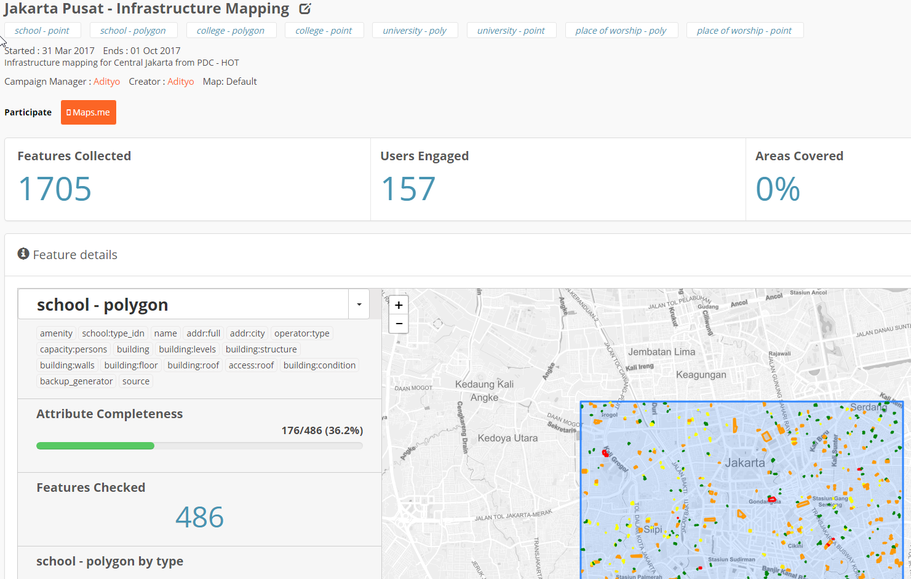
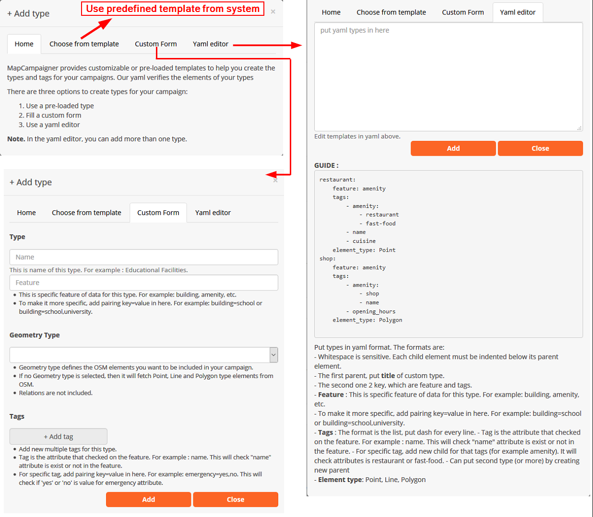
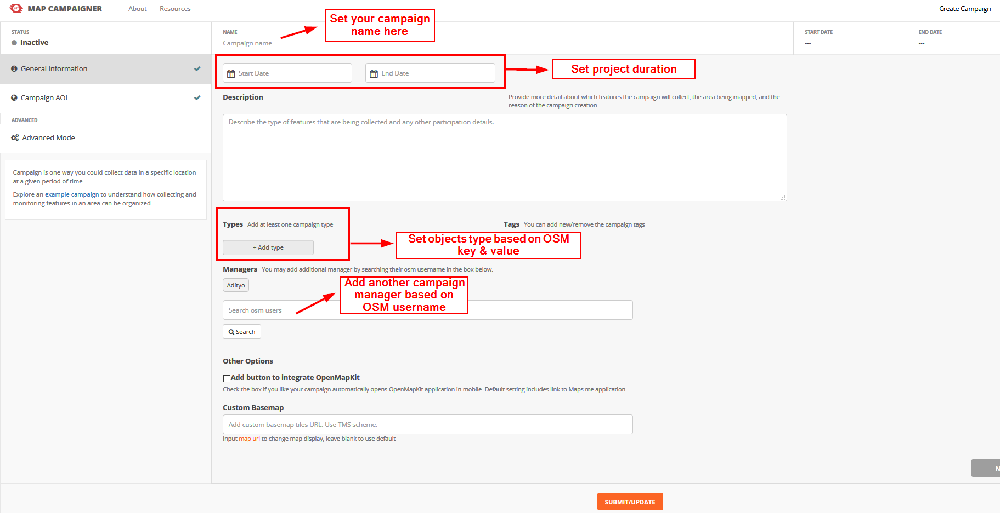
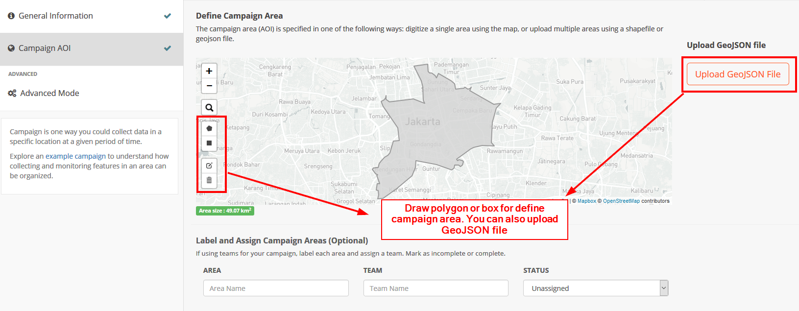

Membuat dan Mengelola Map Campaigner untuk Pemetaan
Download page as PDFLearning Objectives:
- Knowing and understanding how to work with Map Campaigners
- Operating Map Campaigners to create mapping activities
- Operate Map Campaigners to monitor mapping activities
In implementing a mapping project you often need a report regarding the progress of the activity in a statistical data about how many objects have been mapped in the activity. There are several tools that can be used to obtain statistical data. One of the tools that we will learn today is Map Campaigner.
I. What is a Map Campaigner?
Map Campaigner is a tool that is intended to gather all project managers and also surveyors into one platform. Project manager can arrange activities with specific types according to their needs. Each mapping activity created by the project manager can be specifically regulated regarding the data and objects collected then will be presented in each mapping project.
II. Benefits and examples of using Map Campaigner
Map Campaigner aims to make it easier for project managers to monitor their mapping projects. For example here is a mapping activity carried out by the HOT team to map all places of worship, schools, universities and high schools in Central Jakarta. By using Map Campaigner, you can see how many total objects have been mapped in this project activity, then how many OpenStreetMap users are helping to participate in this mapping project, both voluntarily and incorporated into the mapping project team.

Example of using Map Campaigner for Central Jakarta
By using Map Campaigner, you can also find out how many objects that are complete by definition of tags or attributes needed. For example, in the picture above, it can be seen that from the activities of this mapping project successfully obtained 1,705 objects by reaching 157 users (both voluntary and including surveyor team). The Map Campaigner also provides information on the completeness of all data collected, for example from 486 mapped school objects, only 36.2% of these school objects are completely mapped in terms of the information attributes needed for this mapping project.
The Campaigner Map also presents a quality assurance feature in terms of the completeness of the attributes of an object in OSM. With Map Campaigner you can see how many objects are still incomplete in terms of predetermined data attributes. You can download all of these objects and fix it using JOSM.

Example of checking attributes by Map Campaigner
III. Creating a New Mapping Project in the Map Campaigner
Until now you know what a Map Campaigner is and what are the benefits and examples of Map Campaigners. You might use Map Campaigner for your own mapping project. In order to create a new project, you must log in first with your OpenStreetMap account. After you have successfully logged in with your account, then you need to click on Create Campaign button. Next there are several steps after you have successfully logged in with OpenStreetMap account. After clicking Create Campaign button, you will be directed to project creation campaign page. On this page there are two stages: managing basic information and organizing work areas.
a. Organizing Basic Information for your Project Campaign
In this section, you will fill in basic information for your project. You must fill in some information on this page:
- Project name. In this section, you only need to fill in the name of the project that you are doing.
- The duration of the project. In this section, you will set the duration of the project in progress. You can provide a date in the past if the mapping project that you are doing is a mapping project that has already been completed.
- Project Description. In this section, you will fill in a description of the project activities.
- Attributes /tags needed. In this section you will provide the OpenStreetMap attributes needed during the mapping project. For OpenStreetMap attributes the required, you can refer to the Wikipedia page1 2 or to Data Model OpenStreetMap module. You can choose to use YAML (which you already learned in the module Using YAML on HOT Export) or with an easy version already provided on this site.

Display when entering OSM attributes for Map Campaigner
)
Note:
When entering tags / attributes informat YAML. There are a number of things to be aware of:
* Use of space is very sensitive here.
* One element consists of the main elements and supporting elements
* All elements under the main element (supporting elements) must be several spaces apart from the main
* The contents of the supporting elements = features, tags, & element_type
* features are categories in OSM. For more details, you can see OSM wikipedia
* To be more specific, you can use sets key & value such as building = school or amenity = hospital
* tags are a collection of key & value that will be checked by the system. Please check wikipedia or OpenStreetMap Data Model module
* element_type is the type of OSM object to be checked, such as point(point),line(line),or area(polygon)
- Add another project manager (optional). In this section you can add other OSM accounts as project campaign if the project that you are working on there is more than one project manager. The role of the project manager is that they can add new attributes to be calculated or change the information that is in their project campaign .

Display on the basic information page
b. OrganizingWork for Campaign Project You
Once you have successfully set the basic information, the next step is you have to organize your project work area. In this section, there are two ways to organize your project work area.
The first way is to use the tools on the left side of the map. You can draw a box or draw freely using the tool. The thing to remember is that the project campaign area should not exceed 315 km2. If your mapping project has more area than mentioned, it is recommended to divide the mapping project area into several sections so that it can be created in the Map Campaigner.
The second way is to use administrative boundary data informat GeoJSON. Using this data, you can immediately see the work area of your project that has been divided into several sections.
After setting the project work area, you can specify which team is assigned to the predetermined project area. This team setting is optional and aims to make it easier to monitor the progress of your team.

Display on work area settings page
IV. View Your Project Campaign Page
Having successfully made a campaign,you can go straight to the main page to see the project. When opening the mapping project, you will be presented with some information ranging from statistical data, a list of errors, and graphs of users who participated in the mapping.

Display page of Map Campaigner
- Feature collected. This section explains how many total objects are collected in the work area.
- User engaged. Explain how many OSM users are participating in helping to map either voluntarily or not.
- Area covered. Explain what percentage of the area that has been completely mapped.
- Feature selection. To select a predetermined OSM feature.
- Selected attribute. Explain some OSM attributes that must be checked by the system to determine the completeness of its attributes.
- Attribute completeness. Explain what percentage of complete OSM objects have the attributes as specified in thesection selected attribute.
- Feature checked. Explain the number of OSM objects that have been collected, specific to only one feature in accordance with thesection feature selection.
- Graph. Explain about the graph of the number of objects in detail
In addition to some of the above, there is also an Errors section which explains the list of objects that have not been completed in terms of OSM attributes. In addition you can also see the User Enggagement section to see the list of OSM users who participated helped map the area along with the number of contributions from each OSM user.
V. Fixing an Incomplete Objects
Using Map Campaigner, you can directly fix OSM objects that are incomplete in terms of their data attributes. To fix it there are two ways.
- First is to fix OSM objects one by one by selecting the object id in thecolumn Name. This way you will be directed to the OpenStreetMap webpage and then you can immediately change it using JOSM or iD.
- The second way is to click Download button at the bottom of error list. By using this, you will download file.osm and opened using JOSM. After the file has been downloaded successfully, you can immediately open it in JOSM to directly complete the attributes.
SUMMARY
Congratulations! You have now successfully learned how to use the Map Campaigner for the purposes of your mapping project. By using Map Campaigner you will find it easier to find out how many objects have been successfully mapped easily and see which OSM objects do not have complete attributes that are suitable for your project.